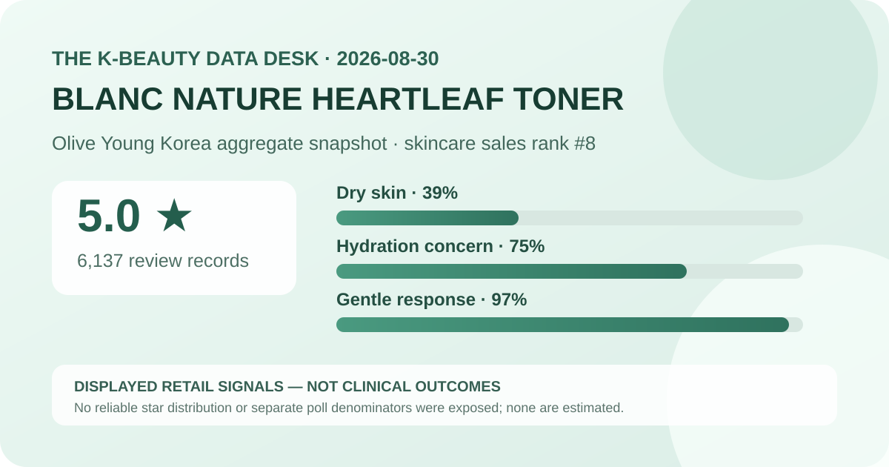
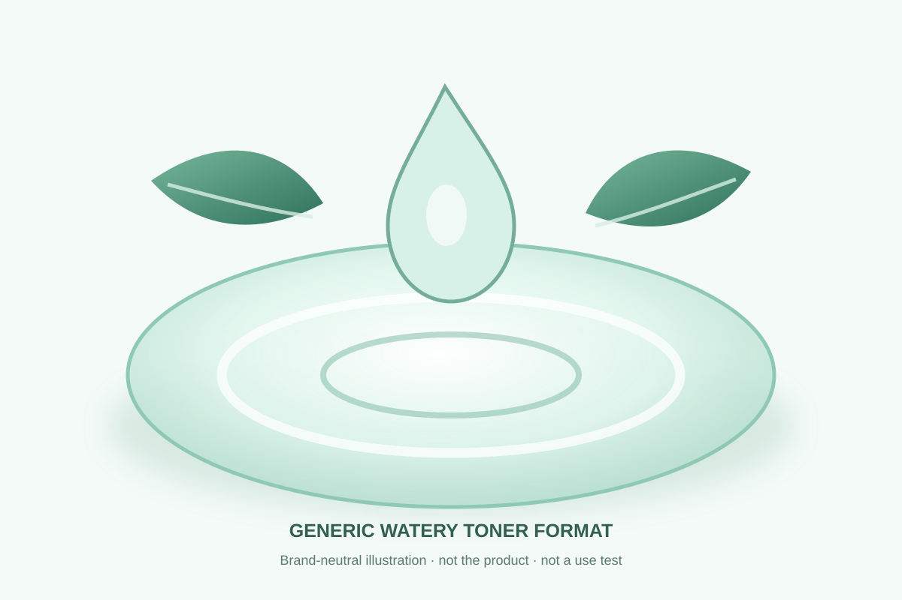

Data captured August 30, 2026. This article uses only the retailer's displayed product title, skincare sales rank, aggregate rating, review count, survey shares, and dated price and pack display. No individual review, reviewer name, product photograph, or user photograph is reproduced or translated. I did not test the product.

The short version: BLANC NATURE 9x Concentrated Heartleaf Toner ranked eighth in the captured Olive Young Korea skincare sales list and displayed 5.0 out of 5 from 6,137 review records. Its survey panel showed dry skin 39%, hydration concern 75%, and a gentle response at 97%. Those figures describe one retailer's feedback system; they do not establish hydration performance, treatment value, or universal tolerance.
The narrow conclusion is strongly positive: within the retailer's rating system, 6,137 linked records produced a one-decimal display of 5.0 on capture day. That is a sizable feedback base, so the figure is more informative about storefront sentiment than the same score attached to a brand-new listing with only a few records.
A displayed 5.0 is not necessarily a mathematically perfect set of scores. The page rounds its average to one decimal place, and it did not expose a trustworthy five-, four-, three-, two-, and one-star breakdown. Different underlying mixes can round to the same number. This analysis therefore does not label all 6,137 records five-star or invent a percentage for any rating band.
Review volume also does not make the sample representative of all toner users. Buyers enter through one retailer, choose whether to leave feedback, may encounter promotions or gifts, and may review different options linked under the same listing. Retailer policies, campaigns, availability, and selection effects can shape the pool. The average is useful as a dated commerce signal, not as a controlled outcome.
This was the leading displayed skin-type response. It describes representation in the poll, not a dry-skin performance score.
This identifies the leading concern response. It is not a corneometer reading, before-and-after result, or proof of lasting hydration.
This is a subjective aggregate response, not an allergy test, safety assessment, or guarantee for reactive skin.
The percentages answer three different prompts and should not be added, averaged, or treated as a combined product score. The retailer did not display a separate denominator for each poll, so it would be unsafe to assume every review record answered every question. The largest response can also omit meaningful minority experiences.
The dry-skin share says who was most represented among displayed choices, not that the toner outperforms alternatives for dry skin. Likewise, the hydration-concern share identifies what respondents selected as a concern; it does not measure how much water the formula adds to skin or how long any effect lasts. The gentle response is encouraging sentiment, but individual tolerance can differ with allergies, barrier condition, routine, frequency, and other products.

The listing categorizes the product as a skin toner. I did not open, pour, smell, apply, or layer it, so viscosity, slip, absorption time, tack, residue, scent, pilling, and compatibility with sunscreen or makeup remain unverified. The local illustration communicates only the general idea of a watery toner and deliberately avoids the product's logo, packaging, colors, and photography.
A toner can be applied with hands or cotton depending on the current label, but the safest source for directions is the package actually received. Using more product does not prove a larger benefit and can increase contact with anything an individual does not tolerate. If finish matters, test the actual formula within the routine, climate, amount, and waiting time in which it will be used.
“9x concentrated” is an English rendering of the Korean promotional wording displayed in the listing title. It is not an independently verified laboratory value in this analysis. Without a clearly defined reference material, test method, and current formula documentation, the phrase does not tell readers the final percentage of heartleaf-derived material or the dose delivered per application.
This post does not reverse-engineer ingredient amounts from marketing language, ingredient order, texture, color, or price. It also does not infer anti-inflammatory, acne-treating, redness-reducing, antimicrobial, or barrier-repair effects from the word heartleaf. A named botanical can be part of product positioning without proving a medical or clinical outcome.
Rank eight indicates current sales prominence inside Olive Young Korea's skincare ranking at one captured moment. It does not mean eighth-best toner, eighth-most hydrating product, or a stronger choice than products below it. The listing carried a one-day promotion, a 47% displayed discount, an added 30 ml, coupon visibility, and same-day-delivery badges. Any of those can affect traffic and buying momentum.
Rank and rating answer different questions. Rank describes commerce within a retailer and period, while the rating summarizes feedback linked to the listing. Neither identifies causation, measures a biological effect, or establishes that the item is suitable for a specific routine. A high rank can be useful for deciding what deserves scrutiny, not for skipping scrutiny.
The captured Korean listing displayed a ₩38,000 reference price and a ₩19,900 sale price. Its title described 300 ml plus an additional 30 ml, while the page showed a 10 ml basis of ₩603. These are dated storefront figures from August 30, 2026, not a permanent price or pack guarantee.
Before comparing value, confirm the selected option, total volume, whether the 30 ml addition remains included, coupon conditions, seller, shipping, returns, expiry information, and final checkout total. A large promotional bottle may lower the displayed unit cost while increasing the quantity a first-time user must commit to. Regional listings may differ in product name, pack, label, formula, price, or authorized seller.
I did not independently capture and reconcile the complete current ingredient list across markets. This article therefore does not claim the toner is fragrance-free, alcohol-free, essential-oil-free, hypoallergenic, non-comedogenic, pregnancy-compatible, or appropriate for acne, eczema, rosacea, allergy, broken skin, or another medical concern. Check the current package for the exact market and item received.
A 97% gentle response cannot rule out a minority of unwanted experiences or predict a first use. When a known allergy, prescription, skin condition, or prior serious reaction makes the decision higher stakes, qualified guidance is more appropriate than a retail average. Introducing one product at a time and trying a small area can make a reaction easier to identify, but neither step guarantees safety.
It is the retailer's rounded one-decimal display across 6,137 linked records. Without a reliable star distribution, it should not be translated into “every review was five-star.”
Dry skin led the displayed poll at 39%. That describes representation among poll responses, not who will benefit most.
No. It is a selected concern in a retail survey, not an instrumental measurement or controlled before-and-after result.
No. It is a subjective aggregate response without a separately displayed denominator, not a safety assessment or personal prediction.
No. It is a generic code-drawn watery-toner visual, not a product photograph, user image, or firsthand test.
BLANC NATURE 9x Concentrated Heartleaf Toner was the highest-ranked valid unpublished candidate after seven already-covered product families were skipped. The ranking and product titles matched, and the product header and review panel agreed on 5.0 stars and 6,137 records.
The defensible reading is that the listing had strong current sales visibility and highly positive storefront sentiment, with dry-skin representation, hydration concern, and gentle-response signals worth noting. Missing star distribution, unknown poll denominators, self-selection, promotional effects, unverified texture, and unverified ingredient concentrations prevent stronger claims about hydration, treatment, safety, or personal fit.
← All reviews · Rankings · Skin-poll guide · Methodology
Published by The K-Beauty Data Desk · Aggregate data captured 2026-08-30. No individual review, name, product photo, or user photo is reproduced or translated, and I did not test the product. I received no free product and am not paid or approved by the brand. Check the dated source listing.
Data basis: Olive Young Korea's aggregate display retrieved 2026-08-30. The 5.0 average, 6,137 review count, sales-rank position, and three survey shares are displayed retail facts. Interpretation, English working name, and recommendations are editorial. No individual review is copied, translated, or attributed.